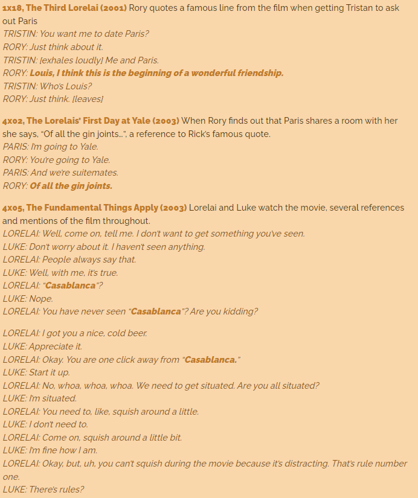
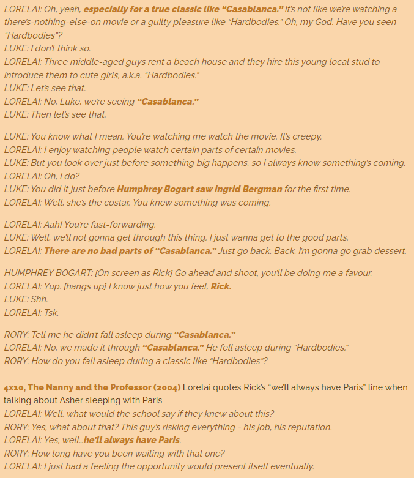
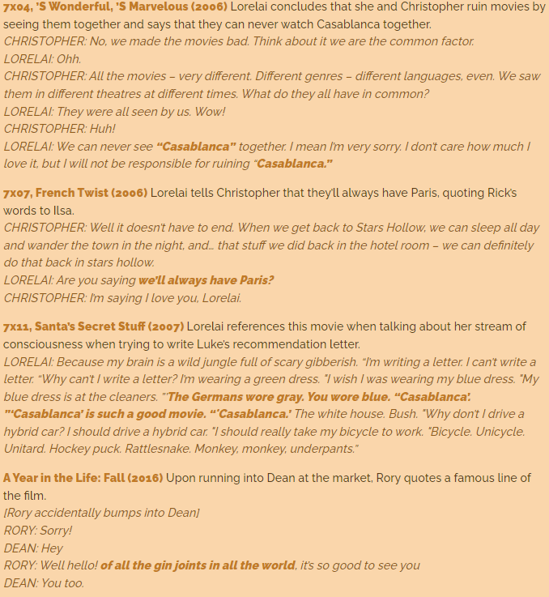

De film speelt zich af tijdens de Tweede Wereldoorlog in de door de Vichy-regering van Frankrijk gecontroleerde Marokkaanse stad Casablanca. Rick Blaine, een man met een schimmig verleden, heeft hier een beroemde nachtclub met een casino. Op een dag komt een zekere Ugarte in het café van Rick met reisdocumenten waarmee de drager vrijelijk door nazi-Duitsland of naar het buitenland kan reizen. Hij geeft de papieren in bewaring aan Rick, wordt vervolgens opgepakt door politiecommandant Louis Renault en sterft hierna in de cel. Niemand weet nu dat Rick over de waardevolle documenten beschikt.
Hierna verschijnen Ilsa Lund en haar man Victor Laszlo in het café. Ilsa ziet Rick's vriend en huispianist Sam en vraagt hem om "As Time Goes By" te spelen. Rick stormt naar hem toe, woedend dat Sam zijn bevel om dat lied nooit meer uit te voeren, heeft genegeerd en is vervolgens stomverbaasd om Ilsa terug te zien.
Ilsa is een vroegere geliefde van Rick in Parijs en Victor is een verzetsleider die op de vlucht is. Ze hebben zulke papieren hard nodig om naar het neutrale Portugal en daarna naar de Verenigde Staten te vluchten. De Duitse majoor Heinrich Strasser weet van het plan en komt naar het café om de overdracht te voorkomen en maakt duidelijke afspraken met politiechef Louis Renault. Laatstgenoemde sluit vervolgens de populaire nachtclub voor 2 weken wegens illegaal gokken.
Rick komt nu in conflict met zichzelf: hij kan Victor en Ilsa de papieren geven zodat zij kunnen vluchten, hij kan Ilsa verleiden en overhalen om samen met hem naar Amerika te vertrekken, of hij kan de papieren voor veel geld verkopen. Hij moet, zoals in de film gezegd, kiezen tussen liefde en plicht. Wanneer het café leeg is, eist Ilsa de papieren op onder bedreiging van een pistool. Rick ontkent dat hij deze heeft en Ilsa durft niet te schieten. Hierna biecht ze op dat ze nog steeds verliefd op hem is. Rick verkoopt zijn nachtclub aan zijn grote rivaal en trekt zijn plan.
Victor wordt vervolgens opgepakt door politiecommandant Renault. Rick weet Renault echter zover te krijgen Victor nu vrij te laten om hem dan later te kunnen oppakken wegens het bezit van de reisdocumenten. Op het moment dat Victor de papieren heeft en Renault hem weer wil arresteren, weet Rick dit te voorkomen door hem met een wapen te bedreigen. Met z'n vieren rijden ze naar het vliegveld. Wanneer majoor Heinrich Strasser vervolgens op het vliegveld verschijnt, wordt deze door Rick doodgeschoten.
Als het vliegtuig van Ilsa en Victor vertrekt, laat Louis een andere kant van zichzelf zien. Hij stelt Rick voor om samen naar Brazzaville te vertrekken om zich daar aan te sluiten bij het Franse verzet.


